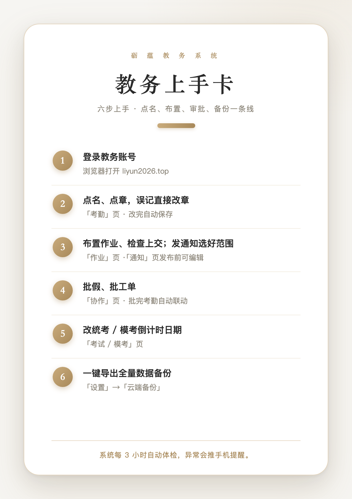
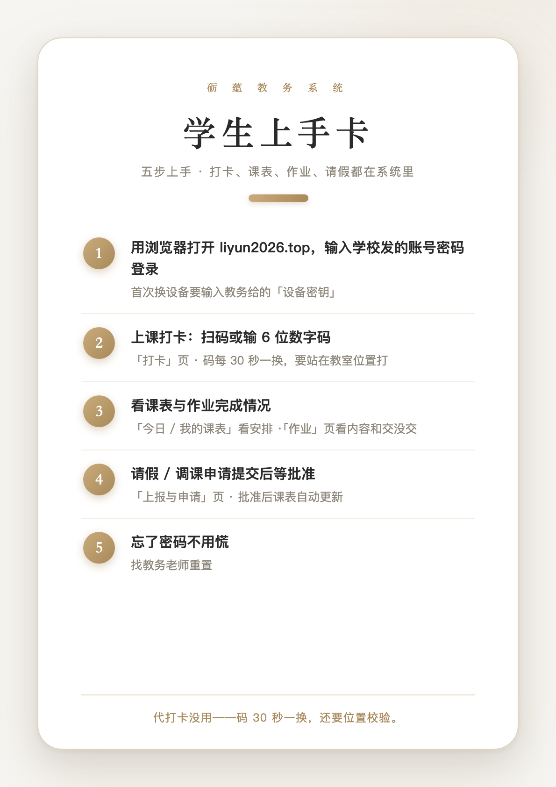

快 速 上 手
三张上手卡：教务六步 · 老师五步只读 · 学生五步
教务 · 六步
点名、布置、审批、备份一条线
- 1
登录教务账号
浏览器打开 liyun2026.top
- 2
点名、点章，误记直接改章
「考勤」页 · 改完自动保存
- 3
布置作业、检查上交；发通知选好范围
「作业」页 ·「通知」页发布前可编辑
- 4
批假、批工单
「协作」页 · 批完考勤自动联动
- 5
改统考 / 模考倒计时日期
「考试 / 模考」页
- 6
一键导出全量数据备份
「设置」→「云端备份」

系统每 3 小时自动体检，异常会推手机提醒。
老师 · 五步只读
五步看全 · 只读视角，看得全、改不了
- 1
登录授课老师账号
浏览器打开 liyun2026.top
- 2
教务板块都能看：考勤 / 作业 / 课表 / 量化 / 打卡记录
左侧栏各页直接翻
- 3
只能看、不能改——点章 / 布置 / 审批都没有
这些由教务老师操作
- 4
你能写的只有两处：录入今日、上报与申请
「今日」页 ·「上报与申请」页
- 5
有问题提工单，等教务处理
「上报与申请」页

授课老师 = 只读视角，看得全、改不了，求改动走工单。
学生 · 五步
打卡、课表、作业、请假都在系统里
- 1
用浏览器打开 liyun2026.top，输入学校发的账号密码登录
首次换设备要输入教务给的「设备密钥」
- 2
上课打卡：扫码或输 6 位数字码
「打卡」页 · 码每 30 秒一换，要站在教室位置打
- 3
看课表与作业完成情况
「今日 / 我的课表」看安排 ·「作业」页看内容和交没交
- 4
请假 / 调课申请提交后等批准
「上报与申请」页 · 批准后课表自动更新
- 5
忘了密码不用慌
找教务老师重置

代打卡没用——码 30 秒一换，还要位置校验。